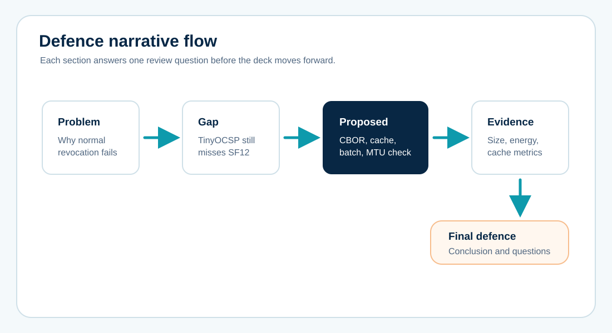
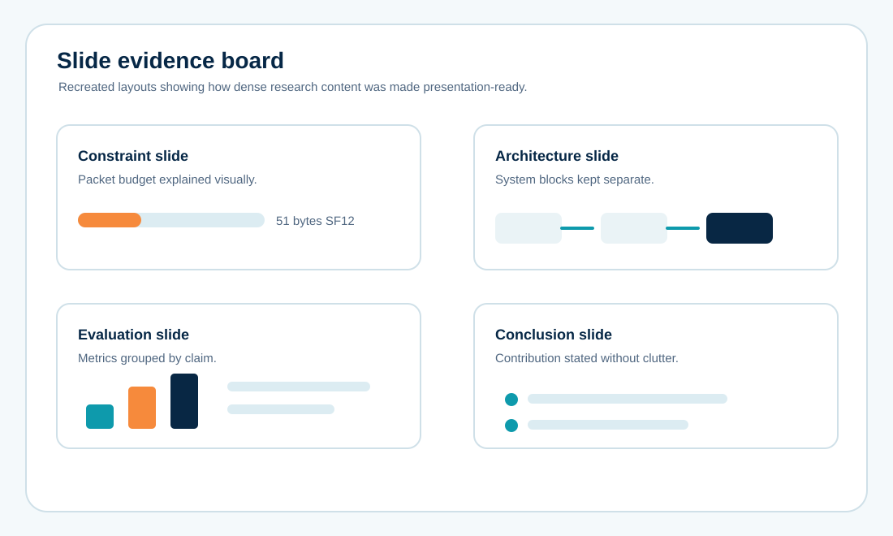
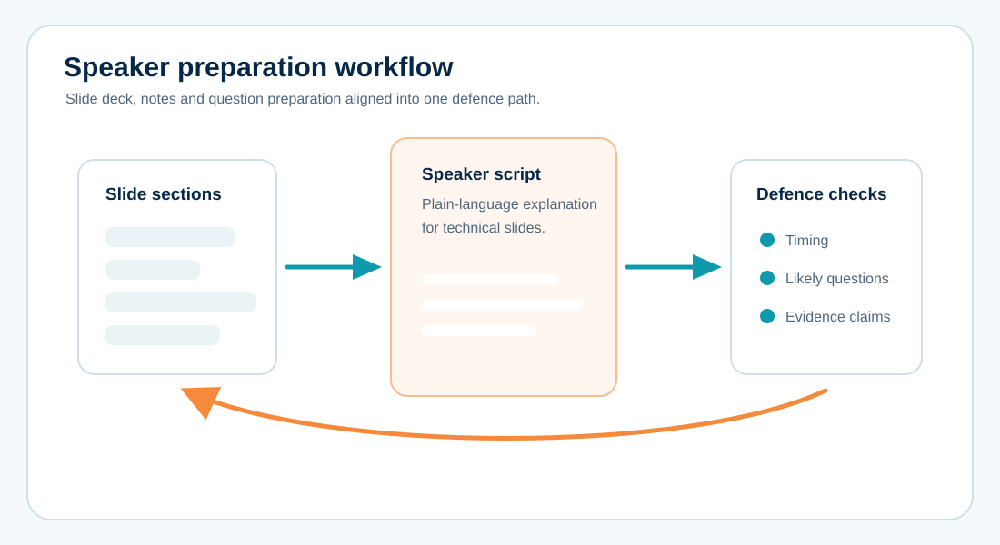

Defence slide deck for a LoRaWAN security project
A research-presentation project that converted a lightweight certificate-revocation protocol into a clear defence narrative with problem framing, method slides, architecture visuals, result evidence and speaker notes.

The Brief
The research had strong technical content, but the defence needed a cleaner story than a report chapter pasted into slides.
The project focused on a lightweight certificate-revocation protocol for resource-constrained LoRaWAN devices. The presentation had to explain why conventional CRL and OCSP approaches were too heavy, how compact CBOR and cache logic solved the packet-size problem, and how simulation evidence supported the final claim. This public version recreates the deck structure without exposing the original student details or full slide file.
The Slide Problem
The work needed to be technically accurate while still being easy to present under defence pressure.
Dense problem statement
The LoRaWAN packet-limit argument involved CRL, OCSP, TinyOCSP, CBOR, CoAP and SF7-SF12 constraints that could not sit on one crowded slide.
Method flow
The deck needed to connect design science, protocol components, simulation setup and evaluation metrics without jumping between unrelated figures.
Speaker readiness
The presenter needed concise notes that translated technical terms into spoken explanations without weakening the academic meaning.
Deck Structure

Opened with the certificate-revocation problem and the LoRaWAN packet-size constraint.
Positioned CRL, OCSP and TinyOCSP as useful baselines that still fail the strictest LoRaWAN conditions.
Separated the proposed protocol into encoding, cache, batch and MTU enforcement decisions.
Closed with validation focus, measured outputs and speaker notes for likely review questions.
Slide Evidence
The final visuals gave each slide one job: explain the constraint, show the proposed design, or support the result claim.


Outcome
The final deck made the research easier to defend because the slides supported the spoken argument instead of competing with it.
The public version changes names, registration details, slide content density and exact file structure. Raw decks, private notes and identifying academic files are not published.
Need a research presentation prepared professionally?
Send the topic, current report or slides, defence format, required number of slides, deadline and any supervisor comments.